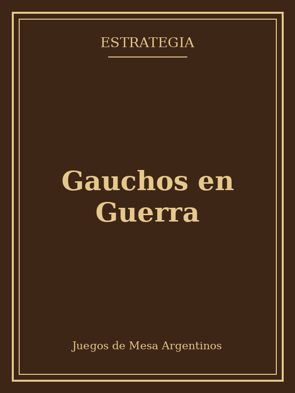

Gauchos en Guerra
★★★★☆
Un juego de control de territorio ambientado en las luchas regionales del siglo XIX. Cada partida obliga a repensar alianzas y rutas de suministro, con un tablero modular que cambia la disposición del terreno en cada juego.
Lo mejor es la tensión de las últimas rondas, cuando los recursos escasean y cualquier decisión puede definir la partida. Como contra, la primera partida se explica un poco larga.